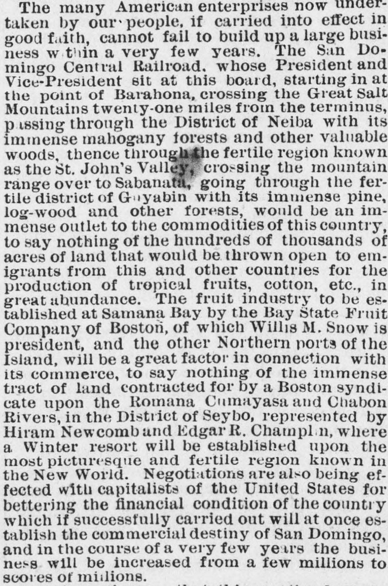
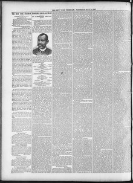

I trust, gentlemen, that this meeting here to night will beConfío, caballeros, en que esta reunión de aquí esta noche habrá de
The New York Freeman. New York [N.Y.], May 14, 1887. Page 2. View the originalVer el original


See the full pageVer la página completaAccording to The New York Freeman on May 14, 1887, a speaker at a meeting credited President Heureux of the Dominican Republic, Minister of Foreign Nations M. M. Guetieu, and the Minister of Public Improvements for offering inducements to United States capitalists to develop the Dominican Republic's resources. The speaker asserted that erroneous reports had been circulated by designing individuals to discredit the country and maintain a monopoly, to the detriment of commercial relations between San Domingo and the United States.Según The New York Freeman del 14 de mayo de 1887, un orador ensalzó al mandatario Heureaux de la República Dominicana, al ministro de Relaciones Exteriores M. M. Gautier y al ministro de Fomento por brindar garantías a los capitalistas estadounidenses para la explotación de las riquezas dominicanas. Aseveró el tribuno que individuos malintencionados propagaban especies falsas para desprestigiar a la nación y perpetuar un monopolio comercial, con grave quebranto de las relaciones mercantiles entre Santo Domingo y los Estados Unidos.
FULL TEXT:TEXTO COMPLETO:
The many American enterprises now undertaken by our people, if carried into effect in good faith, cannot fail to build up a large business within a very few years. The San Domingo Central Railroad, whose President and Vice-President sit at this board, starting in at the point of Barahona, crossing the Great Salt Mountains twenty-one miles from the terminus, passing through the District of Neiba with its immense mahogany forests and other valuable woods, thence through the fertile region known as the St. John's Valley, crossing the mountain range over to Sabanata, going through the fertile district of Guyabin with its immense pine, log-wood and other forests, would be an immense outlet to the commodities of this country, to say nothing of the hundreds of thousands of acres of land that would be thrown open to emigrants from this and other countries for the production of tropical fruits, cotton, etc., in great abundance. The fruit industry to be established at Samana Bay by the Bay State Fruit Company of Boston, of which Willis M. Snow is president, and the other Northern ports of the Island, will be a great factor in connection with its commerce, to say nothing of the immense tract of land contracted for by a Boston syndicate upon the Romana Cumayasa and Chabon Rivers, in the District of Seybo, represented by Hiram Newcomb and Edgar R. Champlin, where a Winter resort will be established upon the most picturesque and fertile region known in the New World. Negotiations are also being effected with capitalists of the United States for bettering the financial condition of the country which if successfully carried out will at once establish the commercial destiny of San Domingo, and in the course of a very few years the business will be increased from a few millions to scores of millions.Las muchas empresas estadounidenses ahora emprendidas por nuestro pueblo, si llevadas a efecto de buena fe, no pueden dejar de construir un gran negocio dentro de muy pocos años. El Ferrocarril Central de Santo Domingo, cuyo Presidente y Vicepresidente se sientan en esta mesa, comenzando en el punto de Barahona, cruzando las Grandes Montañas de Sal a veintiún millas del término, pasando por el Distrito de Neiba con sus inmensos bosques de caoba y otras valiosas maderas, de allí por la fértil región conocida como el Valle de San Juan, cruzando la cordillera hasta Sabanata, pasando por el fértil distrito de Guyabin con sus inmensos bosques de pino, palo de tinte y otros, sería una inmensa salida para los productos de este país, por no decir nada de los cientos de miles de acres de tierra que serían abiertos a emigrantes de este y otros países para la producción de frutas tropicales, algodón, etc., en gran abundancia. La industria frutera a establecerse en la Bahía de Samaná por la Bay State Fruit Company de Boston, de la cual Willis M. Snow es presidente, y los otros puertos del Norte de la Isla, será un gran factor en conexión con su comercio, por no decir nada de la inmensa extensión de tierra contratada por un sindicato de Boston en los Ríos Romana Camayasa y Chabón, en el Distrito de Seybo, representada por Hiram Newcomb y Edgar R. Champlin, donde se establecerá un resort de invierno en la región más pintoresca y fértil conocida en el Nuevo Mundo. También se están efectuando negociaciones con capitalistas de los Estados Unidos para mejorar la condición financiera del país que si llevadas a cabo con éxito establecerán de inmediato el destino comercial de Santo Domingo, y en el curso de muy pocos años el negocio será aumentado de unos pocos millones a decenas de millones.